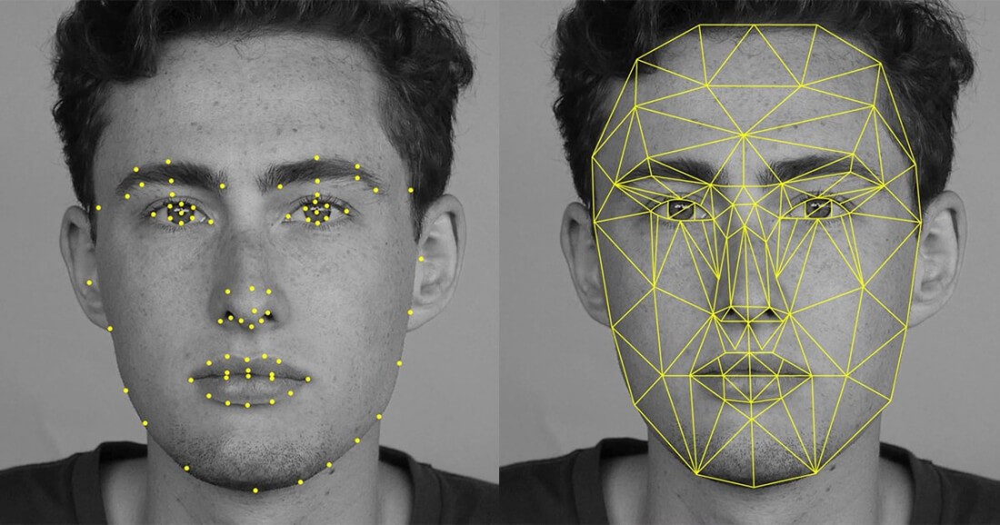

Computing Innovation
My computing innovation is facial recognition. Facial recognition is a way of using technology to identify or verify a person. It can recognize form photos, video, or real person. The intended purpose is to be able to recognize and identify a person. It can be used for things such as face unlocking on smartphones, computers.Law enforcement may also use mobile devices to identify people during police stops.
Read More
